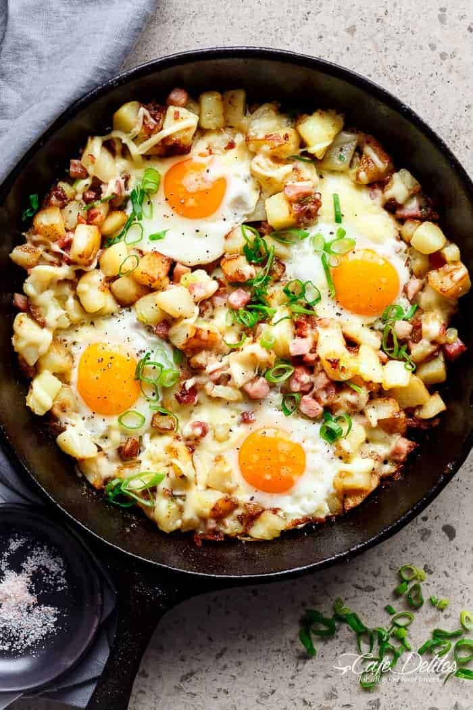

Breakfast Hash Recipe

Description
This breakfast skillet is hands down the BEST way to cook your eggs, potatoes, bacon and cheese! What may look complicated as actually one of the most easiest recipes I’m going to make you cook. Yes. MAKE YOU. This skillet is full of golden potatoes, fried in a small amount of oil OR baked (your choice), followed closely with more crispy-ness in the form of bacon, with scallions (shallots for us Aussies) coming in third to add another layer of flavour, and THEN melted mozzarella cheese! In about 30 minutes.
Ingredients
- 24 oz (700 g) potatoes, (about 4 medium-sized), scrubbed clean and peeled
- 2 tablespoons olive oil, (or coconut oil)
- 7 oz (200 g) diced bacon, (trimmed of fat)
- 2 scallions or spring onions, (shallots) trimmed and finely sliced
- 4 large eggs
- 1/4 cup shredded mozzarella cheese (or cheddar)
- Cracked pepper to season
Steps
- Dice potatoes into small 3/4-inch cubes.
- Heat the oil in a large cast iron skillet or pan over medium heat. Fry the potatoes in the hot oil and cook while stirring occasionally, until golden and crispy (about 20 minutes). To speed up cooking time, cover pan with a lid, checking the potatoes every 4-5 minutes or so to stir them (this takes about 15 minutes).
- Add the bacon pieces to the pan and fry while stirring occasionally for 10 minutes until crisp. The potatoes will be golden with crisp edges, while soft on the inside. Add the spring onions; stir them through and season with pepper (optional).
- Using a wooden spoon or spatula, make four wells in the hash, crack an egg into each well and arrange the mozzarella around each egg. Fry until the whites are set and the eggs are cooked to your liking.
- Serve immediately.
Back to Homepage